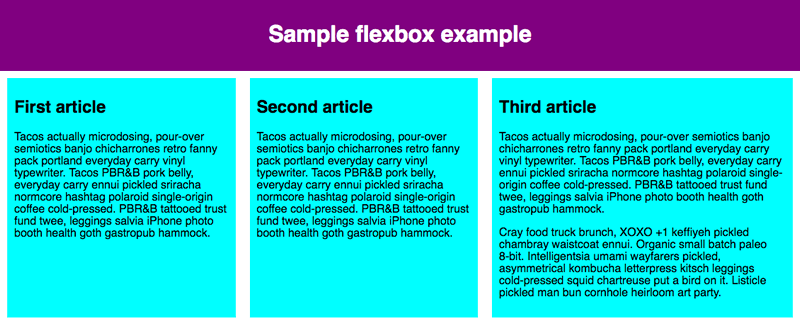

Flexbox
Flexbox es un método de diseño de página unidimensional para compaginar elementos en filas o columnas. Los elementos de contenido se ensanchan para rellenar el espacio adicional y se encogen para caber en espacios más pequeños. En este artículo expondremos todas sus características básicas.
¿Por qué flexbox? Durante mucho tiempo, las únicas herramientas fiables con compatibilidad cruzada entre navegadores disponibles para crear diseños CSS fueron cosas como la flotación y el posicionamiento (en-US). Están bien y funcionan, pero de alguna manera también limitan bastante y frustran.
Con tales herramientas resulta difícil, si no imposible, lograr obtener en cualquier forma conveniente y flexible un diseño de página sencillo con unos requisitos como los siguientes:
Centrar verticalmente un bloque de contenido dentro de su elemento padre.
Hacer que todos los elementos secundarios de un contenedor ocupen una cantidad igual del ancho/alto disponible, independientemente del ancho/alto que haya disponible.
Hacer que todas las columnas en una compaginación en columnas múltiples adopten la misma altura incluso si contienen cantidades diferentes de contenido.
Como verás en las secciones siguientes, los elementos flexbox facilitan mucho algunas tareas de compaginación.
Verás que hay un elemento header con un encabezado de nivel superior en él, y un elemento section que contiene tres elementos article. Los usaremos para crear una compaginación bastante habitual de tres columnas.
Especificar qué elementos colocar como cajas flexibles
Para comenzar, vamos a seleccionar qué elementos se van a presentar como cajas flexibles. Para ello, establecemos un valor especial de display en el elemento padre de los elementos que deseas editar. En este caso, queremos compaginar los elementos article, por lo que lo establecemos en section (que se convierte en un contenedor flexible):
Código CSS section { display: flex; }
El modelo flexible
Esto hace que el elemento section se convierta en contenedor flex, y sus hijos en elementos flexibles. El resultado de esto debería ser algo así:

El eje principal (main axis) es el eje que corre en la dirección en que se colocan los elementos flexibles (por ejemplo, según se disponen las filas en una página o hacia abajo según se disponen las columnas en una página). El inicio y el final de este eje se denominan inicio principal (main start) y final principal (main end).
El eje transversal (cross axis) es el eje que corre perpendicular a la dirección en la que se colocan los elementos flexibles. El inicio y el final de este eje se denominan inicio transversal (cross start) y extremo cruzado (cross end).
El elemento padre que tiene establecido display: flex (el elemento section en nuestro ejemplo) se llama contenedor flexible.
Los elementos que se presentan como cajas flexibles dentro del contenedor flexible se denominan elementos flexibles (son los elementos article de nuestro ejemplo).
¿Columnas o filas?
Los elementos flexbox proporcionan una propiedad llamada flex-direction que especifica en qué dirección corre el eje principal (en qué dirección están dispuestos los elementos hijo de un elemento flexbox); por defecto, está establecido en el valor row, por lo que se presenta en una fila en la dirección en que se escribe el idioma predeterminado de tu navegador (de izquierda a derecha, en el caso de un navegador en español).
Añade la declaración siguiente a tu regla section:
Código CSS
flex-direction: column;
Observa que esto vuelve a colocar los elementos en una disposición en columna, al igual que antes de añadir cualquier CSS.
Delimitar
Un problema que surge cuando tienes una cantidad fija de ancho o alto en tu diseño es que los hijos de un elemento flexbox eventualmente desbordan el contenedor y rompen el diseño. Echa un vistazo a nuestro ejemplo flexbox-wrap0.html e intenta verlo en vivo (toma una copia local de este archivo si deseas seguir este ejemplo):

Aquí vemos que los elementos hijo se salen de su contenedor. Una forma de solucionar esto es añadir las declaraciones siguientes a tu regla section:
flex-wrap: wrap; flex: 200px;

Ahora hay varias filas y en cada fila caben tantos elementos hijo de un elemento flexbox como sean necesarios, y cualquier desbordamiento hace saltar el elemento hacia la línea siguiente. La declaración flex: 200px que hemos establecido en los artículos significa que cada uno tendrá al menos 200 px de ancho; discutiremos esta propiedad con más detalle más adelante. Observa también que los últimos elementos hijo de la última fila se agrandan hasta rellenar toda la fila.